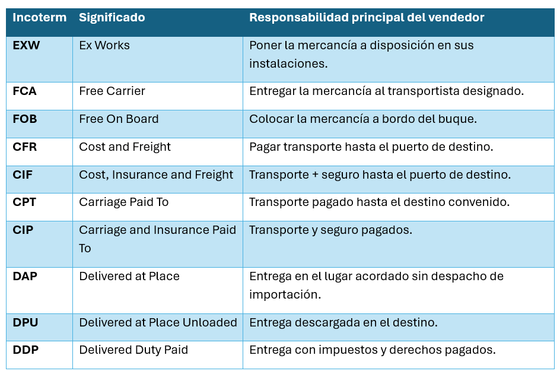
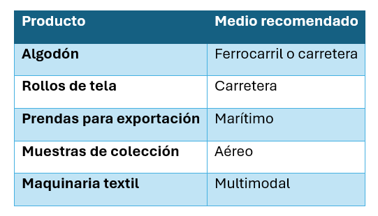

Unidad IV · Tema 4.4
Agente aduanal, Incoterms® 2020 y transporte textil
La figura del agente aduanal y el dominio de los Incoterms® 2020 constituyen la base técnico-jurídica para delimitar riesgos, calcular aranceles y asegurar el tránsito transfronterizo de insumos y prendas de confección.
4.7 Agente aduanal
Profesional autorizado por la autoridad hacendaria para promover el despacho aduanero de mercancías en representación de importadores y exportadores.
Entre sus funciones destacan:
- Elaborar pedimentos oficiales.
- Clasificar arancelariamente las mercancías textiles.
- Calcular y enterar contribuciones (IGI, IVA, DTA).
- Coordinar el despacho aduanero ante recintos fiscalizados.
- Verificar el cumplimiento de regulaciones y restricciones no arancelarias (NOMs de etiquetado textil).
4.8 Incoterms® 2020
Los Incoterms (término abreviado del inglés International Commercial Terms) son los términos de uso universal en el comercio internacional que establecen las responsabilidades del vendedor y comprador respecto a costos, riesgos y trámites de entrega.
| Incoterm | Significado | Responsabilidad principal del vendedor |
|---|---|---|
| EXW | Ex Works | Poner la mercancía a disposición en sus propias instalaciones o fábrica. |
| FCA | Free Carrier | Entregar la mercancía despachada de exportación al transportista designado. |
| FOB | Free On Board | Colocar la mercancía a bordo del buque en el puerto de embarque convenido. |
| CFR | Cost and Freight | Pagar el transporte internacional hasta el puerto de destino. |
| CIF | Cost, Insurance and Freight | Transporte marítimo + seguro de carga hasta el puerto de destino. |
| CPT | Carriage Paid To | Transporte pagado hasta el destino convenido (multimodal). |
| CIP | Carriage and Insurance Paid To | Transporte principal y seguro de cobertura amplia pagados hasta destino. |
| DAP | Delivered at Place | Entrega en el lugar acordado en destino, lista para descargar, sin despacho de importación. |
| DPU | Delivered at Place Unloaded | Entrega descargada en la terminal o punto de destino acordado. |
| DDP | Delivered Duty Paid | Entrega en destino con todos los impuestos, derechos y trámites aduanales cubiertos. |

4.9 Transporte en la industria textil
Medios de transporte recomendados según la naturaleza del insumo o producto:
| Producto | Medio recomendado |
|---|---|
| Algodón | Ferrocarril o carretera |
| Rollos de tela | Carretera |
| Prendas para exportación | Marítimo |
| Muestras de colección | Aéreo |
| Maquinaria textil | Multimodal |

Comprueba tu comprensión
¿Cuáles son las diferencias críticas de riesgo y costo entre pactar una exportación de prendas bajo el término FOB frente a CIF o DDP?
Ir a la actividad 4.4Cuando termines los temas de la unidad, aplica lo aprendido en el caso de estudio de la empresa "Exportaciones Textiles ESIT".